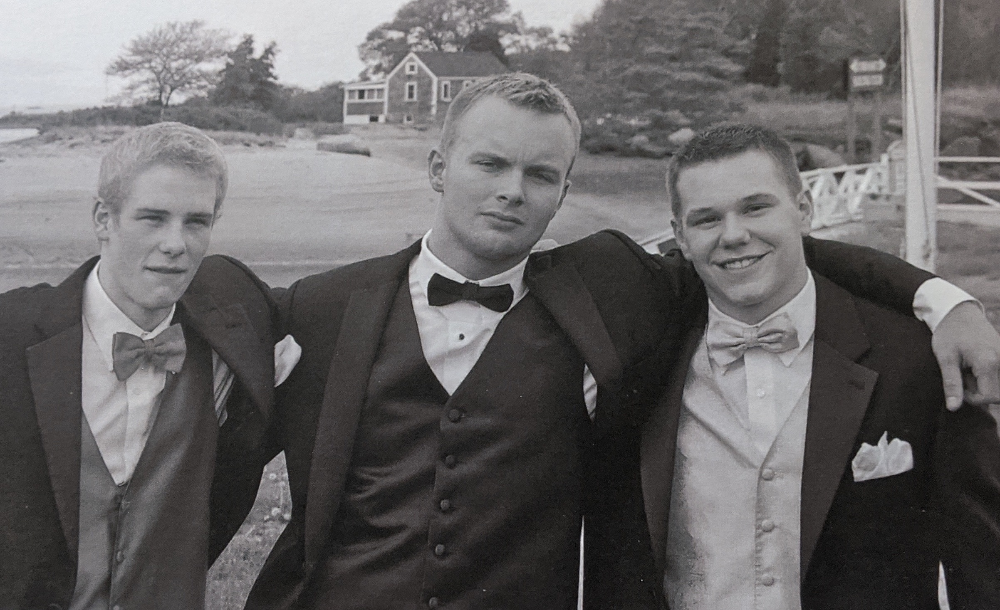
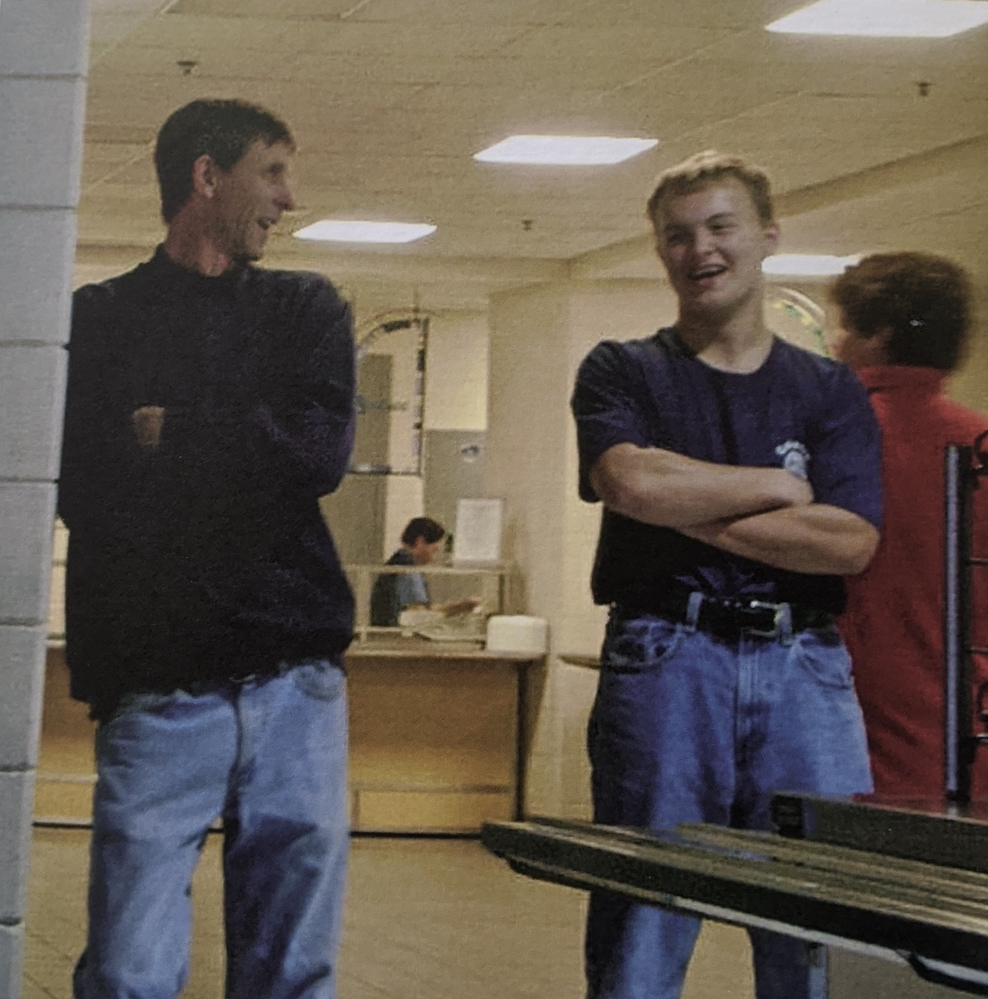
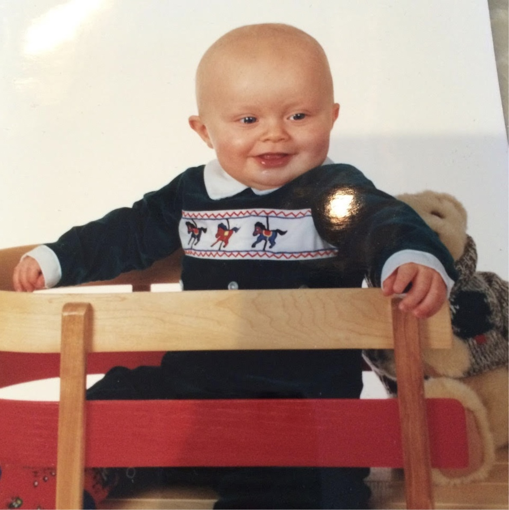
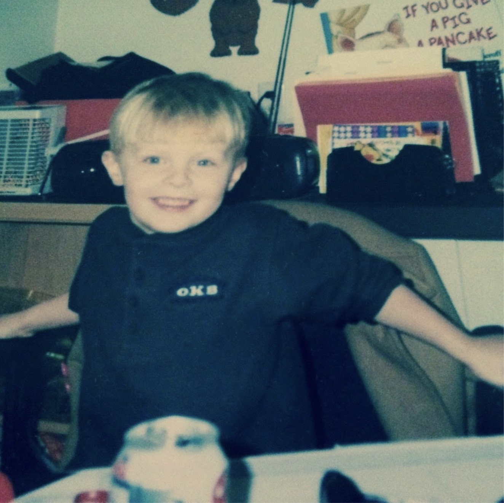
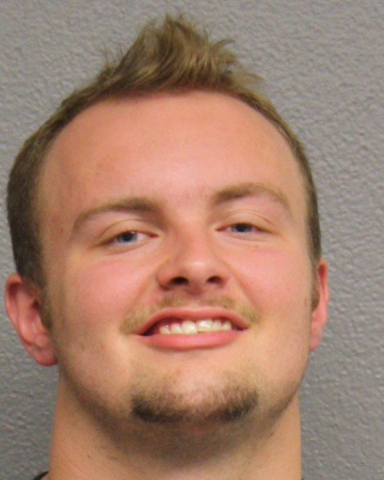
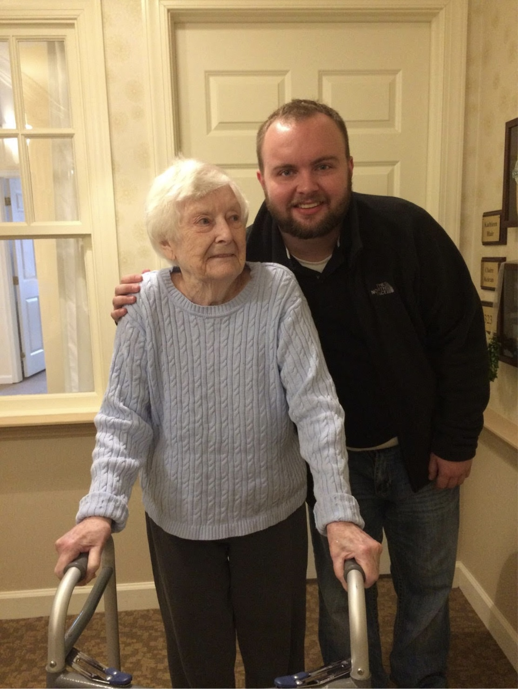

Michael Livingstone (fourth from left) celebrates his graduation from Cohasset High School in 2013 with his friends. Photo courtesy of Jean Livingstone.
2 / 7

On the night of the prom, Michael (middle) ran up and down the stairs, brushing his teeth six times, and fretting about what he would talk about with his date. Photo courtesy of Jean Livingstone.
3 / 7
A portrait of Jean Livingstone, Michael Livingstone's mother, in 2021. Photo by Mary Murphy.
4 / 7
A portrait of Michael Livingstone and his sister, Emily. Photo courtesy of Jean Livingstone.
5 / 7

Michael (right) poses for a picture with a school custodian. He worked for the Town of Cohasset the summer after 10th grade. Photo courtesy of Jean Livingstone.
6 / 7
In high school, Michael (right) became a wrestling star noted not for his braun but his brains, placing fifth in the state twice. Photo courtesy of Jean Livingstone.
7 / 7
Emily gave this booklet to Jean as a Mother's Day gift. While Michael lived in Providence, Jean would make the 75-minute drive to Providence each week to bring her son to see his psychiatrist and help him with household chores like buying groceries and doing his laundry. Photo courtesy of Jean Livingstone.
Jean Livingstone always felt that her son was something of a miracle. Scarred by the memory of her first child, who died a few hours after birth in 1989, Jean and her husband, Bill, had been trying to have a child without success for nearly six years. So, when Michael Livingstone was born in 1995, they were absolutely elated.
The miracles continued: Michael could read at the fifth grade level in first grade. His memory, particularly for world history and ancient philosophy, was off the charts. And in high school, he would become a wrestling star noted not for his braun but his brains.
But as Michael prepared to attend Providence College in 2013, his demeanor increasingly gave way to aggression. Jean and Bill, who live in the affluent seaside town of Cohasset, Massachusetts, suspected he might be abusing drugs, but they had no idea which ones. They also wondered whether he had an underlying mental health issue.
Each expert they talked to seemed to have a different opinion.
As things turned out, Jean Livingstone would spend 4 ½ years after her son’s high school graduation consumed with helping Michael recover from a drug problem she didn’t fully understand herself. It was a seemingly Sisyphean endeavor—driving him from appointment to appointment, spending more than $200,000 on his treatment, and more than anything, expending the emotional anguish that comes with watching your mild-mannered miracle of a child slowly descend into drug addiction.
Michael was no stereotypical drug addict. He would tell his mother that he would never stop using drugs, in part because he said he knew better than to harm himself. “I’m not stupid, mom,” he told her time and time again. “I research every drug I do.” And it’s true: he was basically a walking Physicians’ Desk Reference, Jean said.
But even that knowledge was not enough to save himself. On December 1, 2017, Michael Livingstone fatally overdosed on fentanyl at the age of 22.
+++
On March 30, 1995, Jean, an insurance agent with a resounding Bostonian accent, gave birth to Michael, who was born five weeks prematurely and was treated in the NICU at Beth Israel Hospital in Boston for 10 days. Physically, he seemed perfect. But as Michael approached his second birthday, his parents started to worry that he might have a learning disability, as he had difficulty speaking and would easily become frustrated.

Michael was born five weeks prematurely and was treated in the NICU at Beth Israel Hospital in Boston for 10 days. Photo courtesy of Jean Livingstone.
Then came kindergarten. Michael had trouble sitting still in class, frequently putting him at odds with his teacher. But one day, a substitute teacher quickly noticed something unusual about Michael—he effortlessly read all the ingredients off of a box of Triscuits on her desk, including the names of the preservatives in the crackers like “trisodium phosphate.”
Michael had a rare condition known as hyperlexia, characterized by a precocious ability to read. “It's like he just knew how to read,” Jean said. In first grade, Michael refused to read the book the class was reading, instead opting to read the entire Harry Potter series. But his favorite book in the world was Macmillan’s Visual Dictionary, which he often read cover to cover.
The miracles kept coming: In restaurants, Michael would always flip over his placemat and use the complimentary crayons to draw every continent, then every country, and then label each country, all by hand. And if you handed him a map, he could tell you approximately when that map was created based on countries’ names and borders.
But despite his extraordinary intelligence, Jean said Michael lacked social skills and preferred to interact with adults rather than kids his age. While he was never diagnosed with autism, his parents suspected he might have a non-verbal learning disorder.

As a child, Michael had a precocious ability to read — in first grade, he finished the Harry Potter series instead of reading the class book. Photo courtesy of Jean Livingstone.
When Michael was 12, Jean found her son a psychologist, and they made a weekly tradition out of driving together to his office a half hour away. In the car, Michael would blast music and show his mother his favorite tracks of the week. Michael loved Billy Joel, Frank Sinatra, “this obscure rap you’ve never even heard of,” his mother remembers.
To this day, Jean has kept his phone with all his playlists on it.
+++
One day during his freshman year at Cohasset High School, Michael came home and surprised the family by telling them he was joining the football team as a defensive tackle, even though he had never played before and was not particularly athletic. His sister Emily, two years younger, was a cheerleader, so his parents loved attending football games to cheer them both on.
Michael’s football coach was also the coach of the wrestling team and begged him to wrestle as well. He did, becoming captain his senior year. Because the school was so small, he wrestled in the 190-pound division even though he weighed 170 pounds. Despite his weight difference, Michael would go on to place fifth in the state—twice.
But his social awkwardness was always on display. For his junior prom, his sister set him up with one of her teammates on the tennis team. On the night of the prom, Michael ran up and down the stairs, brushing his teeth six times, and fretting about what he would talk about with his date.
Still, Michael’s teachers predicted that he would “absolutely soar” in college.
+++
Michael was never the type to attend parties, but he started smoking marijuana with increasing frequency his junior year of high school. Jean ascribed his marijuana usage to typical high school shenanigans until one day in 2012, Cohasset Police caught him smoking a joint with his friends in the parking lot of the library and charged him with a misdemeanor for possessing marijuana.
In court, the city dropped the charge but Jean worried something was off when Michael showed little remorse for his actions, almost as if he had not processed that he’d been arrested. Michael’s psychologist brushed off any concern about the incident, saying it was not unusual for a high schooler to use marijuana.
Despite this blip, Michael’s future appeared bright. He worked hard on his college applications and was admitted to each of the universities he applied to, save Harvard and Williams. He committed to Providence College in Rhode Island.
Michael's grade school teachers predicted he would "absolutely soar" when he went off to college. Photo courtesy of Jean Livingstone.
Shortly after his high school graduation in 2013, Michael had a group of friends over at his house, none of whom Jean had ever seen before. Michael and his friends broke into his father’s liquor cabinet and drank much of his liquor. When she saw Michael’s face, Jean could tell he wasn’t just drunk but on some kind of other drugs as well. Fearing she would be cited for enabling underage drinking, she kicked all of Michael’s friends out.
That day, she saw a new side of Michael. A rage-filled, physical Michael replaced the mild-mannered and socially awkward Michael she had known her entire life.
+++
That summer, as he prepared to head to Providence College, Michael worked full-time for Cohasset’s Department of Public Works. One day, Jean noticed $1,000 in cash and $40,000 worth of her jewelry were missing from a safe in the house. On the way to report the missing jewelry to the police, Jean abruptly stopped her car and turned around. She had a gut feeling her son was responsible.
Back at home, she confronted Michael. After some pressing, he confessed to pawning her jewelry in Boston. Later that day, Jean went to the shop to buy back her jewelry and discovered her son had only received $2,300 for it. There was something else that bothered Jean even more than the theft: It was on that day that Michael began referring to his mother by her first name.
“That’s when we realized there was something going on,” said Jean. “He went from Michael Livingstone to Michael ‘I don't know who the hell you are.’”
The problems continued. A few weeks later, Jean learned that Michael had been driving drunk, so she took away his keys. Mocking her by her first name again, Michael pushed Jean to the ground, marking the first time he had laid hands on his mother for anything but an embrace.
At a loss for words, she locked herself in her car and called the police while Michael broke her car windows. When the police arrived, Michael behaved as if nothing had happened. Not wanting him to get arrested, Jean tried to hide the damaged car window from the officers.
After the police left, she took Emily and stayed with her sister in Boston for the weekend. She also reached out to Michael’s best friend since preschool, Brendan Queenan. Based on rumors he’d heard swirling among his high school friends, he suggested sending Michael to a rehabilitation program. Jean was blindsided by his suggestion. She had not considered the possibility that her son might have a drug problem other than his alcohol and marijuana use.
As the summer drew to a close, Michael was due to start school in Providence. Jean and Bill decided to let him go.
His last night at home, Michael approached his mother and told her how much he loved her and that he would miss her.
+++
Things deteriorated quickly. Not even two days into the semester, Michael was caught snorting cocaine in his dorm with other students. School officials immediately placed him on disciplinary probation and moved him out of the freshman dormitory and into a room by himself.
He stayed at school and finished the semester with a 3.2 GPA, but when he returned home for winter break, his violent and erratic behavior continued.
Jean took Michael to see his psychologist, who diagnosed him with a mood disorder and prescribed lithium.
Before returning to college for his spring semester, Michael saw a psychiatrist who told Jean that her son was not suffering from any mental health problems, but would benefit from going to a rehabilitation program given the amount of marijuana he smoked.
Michael resisted. “What, you think I’m a drug addict? I smoke pot, get over it,” Michael told his mother.
“In his mind, he never thought he was an addict,” Jean said. Michael always expressed disgust for addicts. “He thought he was too powerful, too strong for that.”
+++
A few days into the spring semester, Michael called his mother to tell her that he couldn’t focus on his homework and was having trouble collecting his thoughts. A psychiatrist at Providence College diagnosed Michael with Attention Deficit Disorder and prescribed him three medications. Jean later learned that he snorted the entire month’s worth of the potent stimulants in three days.
Every mental health professional Michael visited offered a different diagnosis. A top Rhode Island Hospital psychiatrist said he did not think Michael had any mental health problems—just that he was highly intelligent and spoiled, according to Jean.
But Michael was having such a hard time concentrating on schoolwork that he took an indefinite leave of absence and returned home. There, his aggressive fits continued.
Cohasset police arrested him again after he, unprovoked, destroyed his parents’ patio furniture and, armed with a golf club, repeatedly struck Jean’s new Lexus while his mother and sister watched in horror. In jail, Michael smeared blood from a cut on his finger all over the cell wall and door, according to the arrest report.

Michael was arrested by Cohasset police on March 24, 2014 after he destroyed his family's patio furniture and his mother's new car. Photo courtesy of the Cohasset, MA Police Department.
Jean became uncooperative with law enforcement when they told her they would be charging Michael with destruction of property, witness intimidation, and domestic assault and battery, the report said. Once again, she was hesitant to turn against her own miracle of a child.
+++
Days later, with her husband—an executive at a liquor company—on a business trip, Jean was left with the task of picking up her son when he was released on personal recognizance.
Hoping to stay in a public place, Jean took Michael to eat at a restaurant, where he sneered at her and raised his voice, leading them to be kicked out of the restaurant. Once outside, he proceeded to kick in Jean’s car, still in shambles.
Jean summoned the police.
Michael was admitted to an inpatient psychiatric facility at Bournewood Hospital in Brookline, where he stayed for five days. At the recommendation of a friend, Jean and Bill hired an interventionist, whose job was to help set up Michael with the resources he needed to improve and coach the family through his rehabilitation process.
The interventionist recommended sending Michael to a 30-day inpatient program at Mountainside, a rehabilitation facility in Connecticut. Michael’s parents paid a non-refundable $50,000 fee to enroll Michael in the program and another $6,000 to the interventionist.
But after less than 24 hours at Mountainside, with no cell phone or wallet, Michael checked himself out and hitchhiked and walked 170 miles back to Cohasset.
Jean held firm. She insisted that Michael go back. Jean’s cousin, Lee, accompanied them for the drive back to make sure she was safe. On the way, Michael began lighting matches, hitting his mother’s head, and pulling her hair while she was driving. As he got out of the car, he whispered in Lee’s ear, “I’m gonna fucking rip her head off someday,” pointing to his mother.
Jean remained silent the entire way back home with her cousin, in part because she had been physically assaulted, but also because she felt guilty that her cousin had to witness what had become of Michael. When they returned, she took her cousin out for a late lunch, where Jean cried and apologized profusely.
“These are the kinds of things I never told my husband because I needed his financial support to help Michael, and I was so afraid to throw Michael under the bus,” she said.
For months, Jean Livingstone had been hiding her emotions from everyone. After her son had a violent outburst, she would often leave the house and drive to the nearest parking lot and cry.
“I kept on hoping that he would get on the right meds and somebody would help him, and I could get my son back, but he never came back,” she said.
+++
After spending so much money on their son’s treatment program at Mountainside, Jean and Bill were hopeful it would finally set Michael on the right path. But a few months after his release, in July 2014, he pulled a knife on his father and physically assaulted him late one night when he told Michael’s friends to leave the house. For Bill, this was the moment that he realized that the old Michael would never be coming back.
The police arrested Michael again, charging him with assault and battery and carrying a dangerous weapon. He was sent to the Norfolk County Correctional Center pending trial, where he stayed for two months. At a hearing, the judge offered Michael two options: either he be imprisoned for six months or he continue to seek help at Four Circles, a rehabilitation facility in North Carolina that had been recommended to Michael’s parents by a new interventionist.
Michael opted for the latter, for which his parents paid another nonrefundable $50,000 fee. But Michael again left the program early and returned to Massachusetts after a few months.
While he was gone, his mother had gotten a restraining order against him, fearing for her family’s safety. To fulfill his probation requirements, his parents paid another nonrefundable fee of $15,000 to enroll him at Hopewell Recovery Services in Brighton, Massachusetts.
That rehab didn’t last long either. After a week, he was kicked out of the inpatient program for abusing gabapentin—an anticonvulsant used to treat seizures and neuropathic pain—and cough syrup, leaving past curfew, and overall non-compliance, court records show.
A psychologist Jean had been consulting told her bluntly that, based on her assessment of her son, Michael would overdose within six months if she did not seek immediate help. But Jean feared that Michael would just walk out again, and she would lose her money.
Ideally, the Livingstones would have sent their son to McLean, a renowned psychiatric hospital in Belmont, Massachusetts, but Jean said that she would have to pay thousands of dollars a day out of pocket. The family’s insurance company told her that they were only obligated to cover two days of treatment to stabilize Michael, which she compared to putting a bandaid on a hemorrhage. “What can you do in two days?”
“There’s very little professional help without people wanting to stick their hand in your pocket for thousands and thousands of dollars,” Bill said. “There's no roadmap, and that's the problem. Every parent is left to their own devices.”
Unsure what to do with her son, Jean found an apartment for Michael back in Providence, where he lived with a close friend, and enrolled him in a drug counseling program at the Phoenix House, a drug and alcohol rehabilitation organization, to remain compliant with his probation. Every Friday, Jean would make the 75-minute drive to Providence to bring Michael to see his psychiatrist and help him with household chores like buying groceries and doing his laundry.
Jean Livingstone in January 2021, three years after her son's death. There is not a day that goes by when she doesn't think about him. Photo by Mary Murphy.
In the spring of 2015, he enrolled in classes at Rhode Island College. But as the year went on, Michael became lethargic. He would sleep for most of the day and gained 50 pounds. Still, he promised Jean that someday, he would graduate from Brown University.
“I believed I really believed that he could pull himself out of this,” Jean said.
But things got worse. In 2016, Michael started to have substance-induced psychotic episodes and went to Rhode Island Hospital three times over the course of a month. Jean found out he had also gone to the hospital for a gabapentin overdose, which she only discovered years later when she requested Michael’s medical records.
A few weeks after his three hospitalizations, Michael called his mother to tell her he was lonely and that he wanted to come home. It had been almost two years since Michael had been arrested for attacking his father, so she allowed Michael to return.
Bill kept a baseball bat beneath his bed, fearing that his son might attack him again.
Michael started working full-time at a 7-Eleven in nearby Scituate, and for the most part, they lived harmoniously. On Christmas night, Jean vividly remembers watching Miracle on 34th Street with Emily and Bill, when Michael came downstairs, joined them, and put his arm around her.
“It was just like we were a real family, the way it used to be,” Jean said.
If but for a moment, tensions seemed like they had subsided.
+++
As 2017 began, Michael started secluding himself in his room and drinking straight vodka when he returned from work. His parents were worried, but they were counting their blessings that he wasn’t aggressive or acting out anymore.
Jean soon discovered Michael was abusing gamma-hydroxybutyrate, a depressant commonly referred to as “gamma,” when he started receiving shipments for printer ink cartridge cleaner, which can be used to synthesize the drug.
Hoping for a brief respite from living with Michael, Emily, Jean, and Bill took a trip to Aruba. Less than two days later, Jean received a call in Aruba from the Cohasset police. Michael had been arrested for driving under the influence. He’d been driving to pick up marijuana while under the influence of gamma, and he started to swerve because he fell asleep.
Jean and Bill filed a petition with the court to involuntarily commit Michael to a treatment facility. Michael was sent to Bridgewater State Hospital and later the Men’s Addiction Treatment Center in Brockton for three months.
It was around that time that Michael admitted to his mother that he was using heroin. Yet again faced with the choice between prison and rehabilitation for his impaired driving charges, Michael went off to another rehabilitation facility in California. His parents paid another nonrefundable fee of $50,000 for his treatment there.
But after five weeks, he was caught with alcohol and was told to leave. He would stay in California for a few more months until his maternal grandmother died. He had had a close relationship with his grandmother and returned to Massachusetts for her funeral.

Despite violent encounters with his parents, Michael maintained a close relationship with his maternal grandmother, Claire Keiran. Photo courtesy of Jean Livingstone.
Not wanting him living at home, Jean found Michael an apartment through Craigslist across the street from a rehabilitation facility in nearby Quincy. Michael found a job at the neighborhood KFC and frequently cooked dinner with a couple with whom he shared the apartment. Jean drove up to check in on him at least three days a week to make sure he was okay.
For Thanksgiving morning in 2017, the entire family drove to Bill’s mother’s house in Scituate. Michael and his sister had had a long period of estrangement during Michael’s downward spiral. But on this day, they sat together in the backseat of the family car, laughing.
Still drinking heavily, Michael was far from being fully healthy, but it seemed that finally, his life was on the mend. He’d found a good, higher-paying job. He told his family before they left for a turkey dinner at Jean’s sister’s house that he was excited to be starting work as a cook at a high-end restaurant a couple blocks from his apartment. And he and his mother made plans to have lunch the following week.
+++
On Friday, Dec. 1, 2017, Michael FaceTimed his mother while she was Christmas shopping. Michael was elated to show her that he had just gotten a haircut and groomed himself in anticipation of his new job.
Jean’s heart fluttered when she saw how handsome her son looked.
A few hours later, at 8 p.m., Jean and Bill were watching TV when Cohasset police knocked loudly on their door.
Michael was dead.
The couple with whom Michael lived had found him unresponsive on the patio of their apartment. An ambulance had taken him to a hospital, but it was too late. He was gone.
“I was in a state of shock,” Jean said. “I actually threw up.” She was so shaken that she didn’t have the heart to tell her daughter; instead, she had one of her friends deliver the news.
As she mourned the death of her son, Jean was also consumed by an overwhelming sense of guilt. The couple that Michael lived with was expecting their first child, and they had found her son dead. In the days after Michael’s death, they invited the Livingstones to dinner. Too ashamed to accept their invitation, Jean instead sent them a $250 gift card for baby clothes.
Jean hoped the medical examiner would have some answers—any answers—that would help explain Michael’s erratic behavior the last few years of his life. “I really hoped in the autopsy report it would say that he had a brain tumor,” she said. Instead, the one-page report pointed to only two culprits: THC, the main psychoactive compound in marijuana, and fentanyl, a synthetic opioid lethal in small doses.
Police conducted an investigation. They found fentanyl dust on Michael’s bureau. But to this day, it’s unclear whether he willfully mixed his marijuana with fentanyl or if his marijuana was laced with fentanyl.
Jean, a deeply spiritual woman, believes his death was accidental.
To Jean, her son’s death feels bittersweet. She treasures all the time she spent with her son and misses him, but she will never forget all the things that pulled her to a dark place: the immense feelings of loneliness and despair stemming from the stigma of addiction that rendered her incapable of sharing the pain of her son’s downward spiral with anyone, including her husband of more than 30 years, for whom it was hard to accept the reality that his son—his own flesh and bones—was an addict.
For four and a half very long years, Jean felt like she was on a raft in the ocean, all by herself, with no lifeline to help her.
“I had so many balls in the air between building a house, taking care of my elderly mother, taking care of Michael and his psychological issues, taking care of a typically developing 16 year old, trying to keep everybody happy, and trying to keep my marriage together. Trying to be superwoman for lack of a better word,” she said.
And yet, she still felt like she was not doing enough.
Months after his death, one of Michael’s friends reached out to her to tell her that she knew who sold Michael the marijuana that he smoked the night of his death. Jean went to the Cohasset Police Department with the information. She says they told her that they were well aware of the purported drug dealer. Jean said he had been convicted for fentanyl possession, though no records matching his name appear in Massachusetts’ public court portal.
The Livingstones considered bringing a wrongful death civil suit against the man. “It would [have been] a hard case to prove, and I know that, but there [would have] always [been] a court docket that says he killed Michael Livingstone,” Jean said. But ultimately, she and her husband chose not to take legal action and the three-year statute of limitations has now passed.
To this day, Jean and Bill continue to pay off a loan they took out to help pay for their son’s drug treatment. There’s a balance of $500 yet to be paid.
+++
It’s been more than three years since her son died, but there’s not a single day that goes by that Jean does not think about Michael. Sometimes, she even communicates with him through a psychic. She continues to feel his presence, sometimes every day, as she thinks about their life together.
“When someone asks me how many children I have, I say two,” she said. “And if they ask me their ages, I'll say 22 and 25. Sometimes, I pretend he’s still in California.”